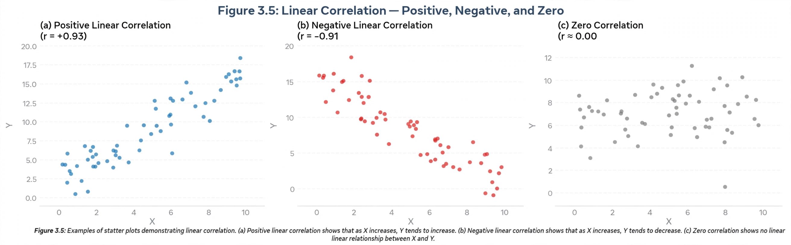

Pearson correlation coefficient
| Pearson correlation coefficient | |
| Symbol | r, ρ |
|---|---|
| Range | −1 to +1 |
| Named after | Karl Pearson |
| Based on | Francis Galton's correlation concept |

The Pearson correlation coefficient (PCC), also called Pearson's r, measures the linear correlation between two sets of data. Developed by Karl Pearson from an idea of Francis Galton, it is the ratio between the covariance of two variables and the product of their standard deviations, and always lies between −1 and +1.
Interpretation
A value of +1 indicates a perfect positive linear relationship, −1 a perfect negative one, and 0 no linear correlation. Values in between indicate weaker relationships. Because it captures only linear association, variables can be strongly related non-linearly while Pearson's r is near zero; it is also sensitive to outliers.
History and use
Galton introduced the notion of correlation in the 1880s while studying heredity; Pearson supplied the mathematical product-moment formula in the 1890s. Pearson's r is the most widely used correlation statistic in the sciences and social sciences, with significance tests typically based on Student's t-distribution.
See also: Correlation coefficient, Karl Pearson.